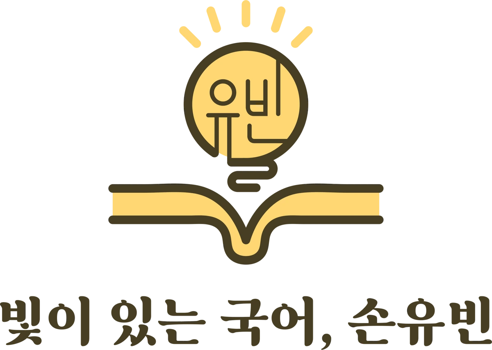
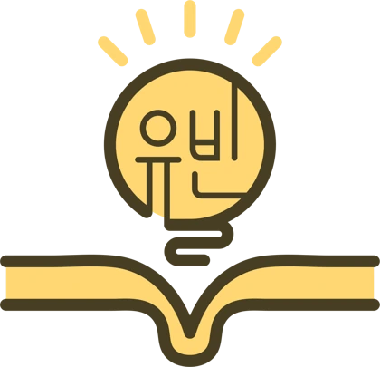

채운 칸 0/70
0
의심
누구 손을 잡을까
0점 · 실전
채운 칸0 / 70
암기율0%
실전에서 한 번에 맞힌 문항0 / 0
붉은 붓을 빌린 횟수0
빛이 있는 국어, 손유빈
접속 코드
선생님께 받은 코드를 넣어 줘. 코드 하나는 기기 하나에서만 쓸 수 있어.

presents일흔 번째 칸 — 성균관 백문백답
기획 · 대본 · 문항 · 해설
손유빈 (빛이 있는 국어)
교재 「중세국어 백문백답 70문 70답」
그림: AI 생성 이미지 · 글꼴: Noto Serif/Sans CJK KR
화면을 누르면 처음으로 돌아갑니다
빛이 있는 국어, 손유빈일흔 번째 칸
칸을 맞게 채우면 문이 열린다. 일흔 칸이 다 차면 문은 닫힌다.
스토리: 다섯 사람과 성균관을 오가며 일흔 칸을 채운다. 문제만: 같은 문항·복습·편지 해독을 대사 없이 빠르게. 둘은 따로 저장돼.
그림첩
이야기에서 본 그림이 여기 모여. 아직 못 본 것은 비어 있어.
장면
스탠딩
빛이 있는 국어, 손유빈
학교를 골라 줘
학교에 따라 조교 명단이 달라. 창현고는 전 파트(중세국어·형태소·품사·맞춤법), 세화여고·화성고는 중세국어. 나중에 교무실에서 바꿀 수 있어.
교무실
조교 얼굴을 누르면 그 파트 시험. 순서는 자유, 다시 봐도 돼(최고 점수가 남아). 교시마다 힌트는 셋.